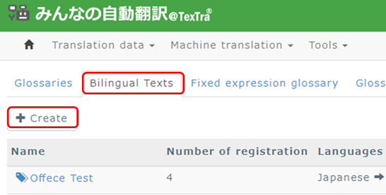
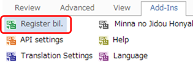
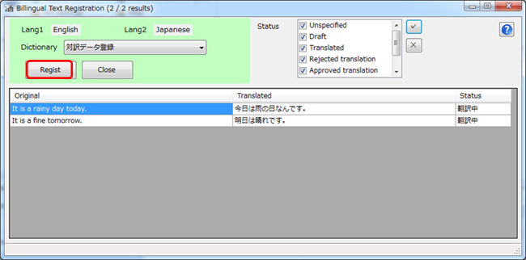

Register bilingual texts
If you register your translation results as bilingual
texts,
you can use them as similar sentences for your future
translation work.
・ To Add Bilingual Text
Create a bilingual text folder
to add bilingual text data
on the site "Minna no Jidou
Hon'yaku".

・ To Register Bilingual Text
Data

Bilingual
sentences on translation editter are imported when this form is
opened.
After selecting the bilingual text to
register,
press the Regist
button.
